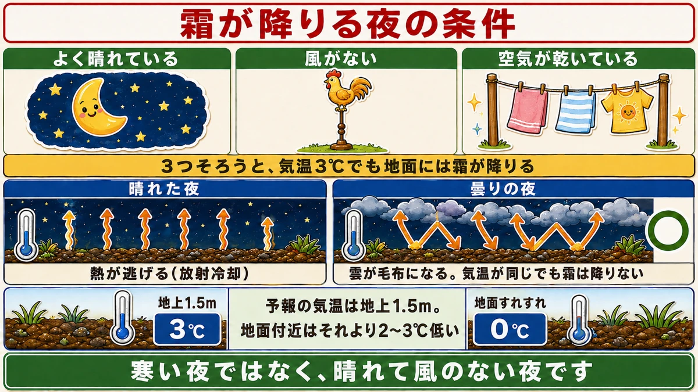
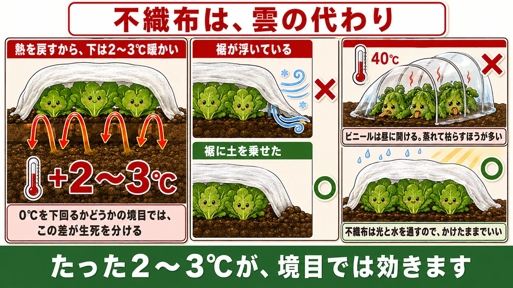
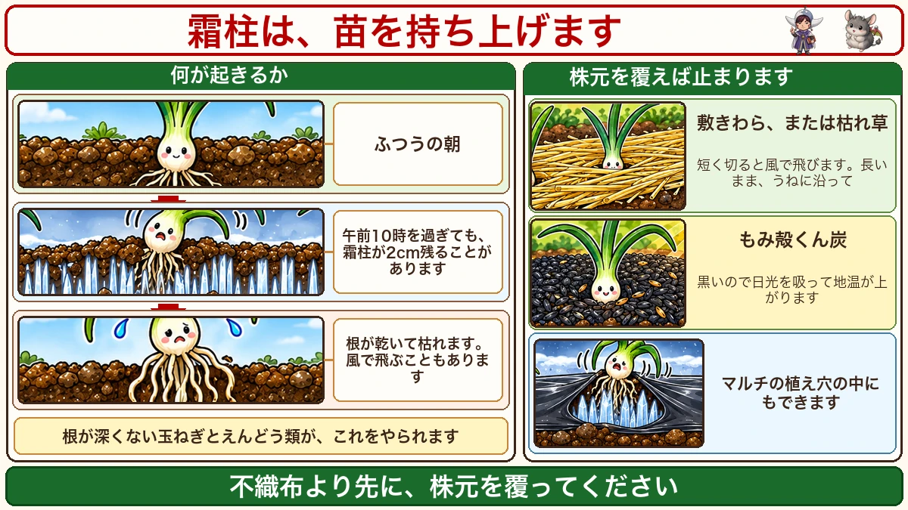
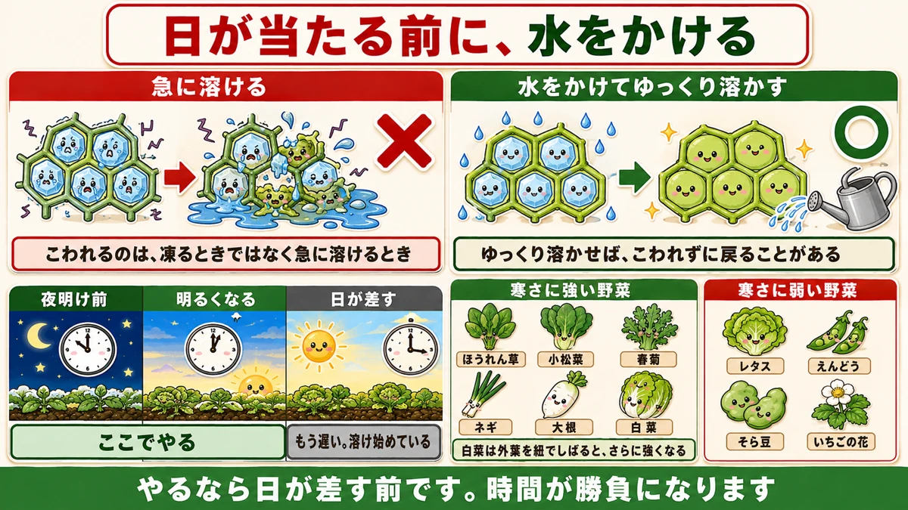
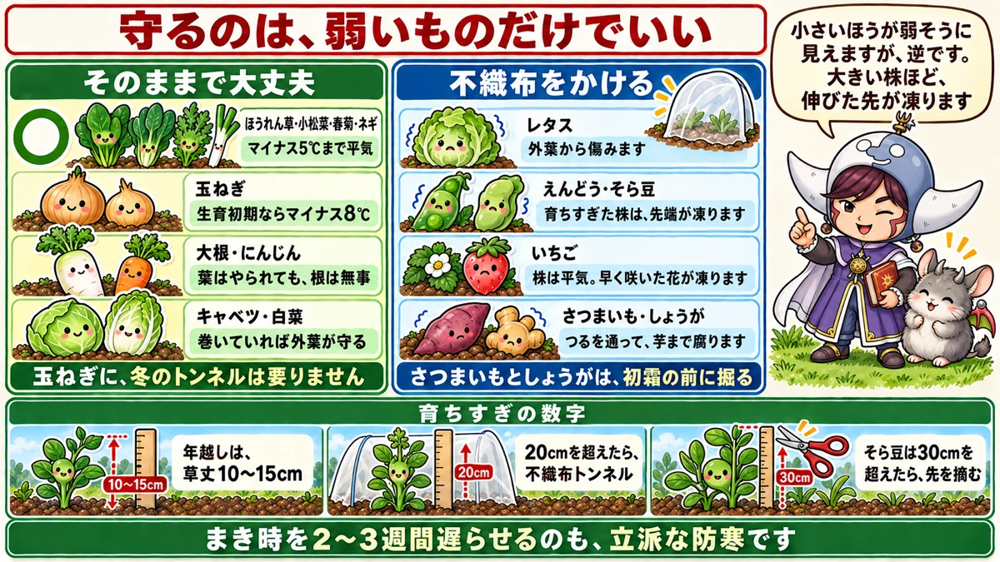
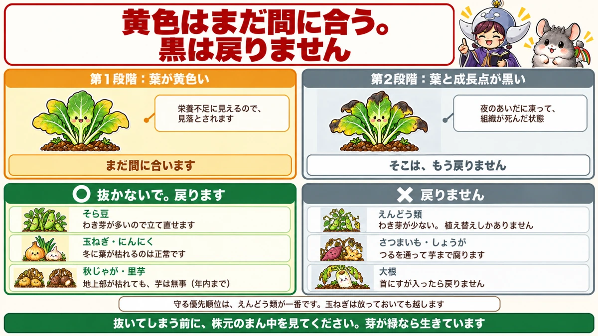

霜と凍害から野菜を守る｜霜が降りる夜、不織布とビニール、霜柱、強い野菜と弱い野菜
どうも、8150（えいこう）です🌱 家庭菜園歴8年、理科の教員免許を持っていて、有機・無農薬で野菜を育てています。
📖 この記事の目次
この記事で分かること
- 霜は、晴れて風のない、冷えこむ夜の翌朝に降りやすくなります。最低気温が0度より高い予報でも、霜が降りることがあります。
- 不織布は、光と雨を通すので、かけたままにしやすい防寒の資材です。ふんわりかけて、すそを飛ばされないように押さえます。
- 穴のないビニールで閉め切ると、昼は中が暑くなりすぎて野菜が枯れることがあります。家庭菜園では、穴のあいたビニールが使いやすいと説明されます。
- 霜柱は、植えたばかりの苗を土ごと持ち上げます。朝のうちに霜柱を崩して、株元を押さえてあげましょう。
- 寒さへの強さは、野菜の種類だけでなく、苗の大きさや、根がついているかどうかでも変わります。
- 霜にやられても、成長点やわき芽が生きていれば、回復することがあります。
冬の朝、畑に行ってみたら、野菜の葉がしおれて黒っぽくなっていた。植えたばかりの玉ねぎの苗が、土ごと浮き上がって倒れていた。そんな経験はありませんか。霜は、一晩で野菜に大きな被害を与えることがあります。
でも、霜が降りやすい夜を知っておき、ちょっとした備えをしておけば、被害を減らすことができます。この記事では、霜が降りる夜の条件から、不織布やビニールの使い方、霜柱の手当て、寒さに強い野菜と弱い野菜、やられた株が助かるかどうかの見分け方まで、順番に書いていきます。説明が分かれているところは、両方の考え方を並べておきますね。

早見：霜と凍害の基本（ひと目で分かる目安）
霜が降りやすい夜
- 晴れていて、風がない
- 最低気温が低い（警戒の目安は、7度以下、5度を切ると、3度以下、など説明によって違う）
- 初霜は、10月下旬から11月ごろ（地域による）
守り方
- 不織布：光と雨を通し、かけたままでよい。ふんわりかける
- 穴あきビニール：保温の力が強い。穴なしで閉め切らない
- もみ殻、わら、くん炭：株元に敷いて霜柱と冷えをやわらげる
霜に弱いもの（霜の前に収穫）
- さつまいも、しょうが：霜の前に収穫
- 里芋：地上の葉が枯れても、芋は年内なら土の中で大丈夫という説明
- 秋じゃがいも：地上部が枯れても芋は腐らない、という説明
霜が降りやすい夜
晴れて、風のない夜
霜は、晴れて風のない夜の翌朝に降りやすくなります。最低気温が低く、夜に風がなく晴れると、放射冷却（ほうしゃれいきゃく）で次の日の朝に霜が降りることが多い、と説明されます。
放射冷却とは、地面が昼のあいだにためた熱を、夜に空に向かって逃がして、冷えていくことです。雲があると、雲が熱を受け止めてくれますが、晴れた夜は熱がどんどん逃げていきます。風があると、空気がかき混ぜられて地面の近くだけが冷えるのをやわらげますが、風のない夜は、地面の近くの空気がどんどん冷えていきます。
警戒する気温の目安
霜に警戒する気温の目安は、説明によって違います。
- 最低気温が7度以下で、夜に風がなく晴れると、翌朝に霜が降りることが多い、という説明
- 5度を切ると霜が発生する、という説明
- 0度にならなくても、3度以下くらいで霜の可能性がある、という説明
どれも「この温度なら必ず降りる」という境目ではなく、警戒を始める目安です。天気予報の最低気温が0度より高くても、地面の近くはそれより冷えるので、霜が降りることがあると考えておきましょう。霜注意報が出ているかどうかも、確かめておくと安心です。
初霜の時期
初霜は、10月下旬から11月ごろに降りることが多く、平年は11月5日から10日ごろという地域もある、と説明されます。もちろん、地域によってかなり違います。住んでいる地域の例年の初霜の時期を、調べておくとよいでしょう。
プランターは冷えやすい
プランターの土は、畑の土にくらべて温度が低くなりやすい、と説明されます。撮影のときに測ったら、プランターの土が畑の畝より7度ほど低かった、という例もあります。プランターは、地面から離れていて、まわりから冷やされやすいからです。寒い夜は、軒下や壁ぎわに移しておくと安心です。動かせるのは、プランターならではの強みです。

不織布の使い方
光と雨を通すので、かけたままでよい
不織布は、光も雨も通すので、換気をしなくてよい、と説明されます。冬のあいだ、かけっぱなしにしておけるのが、いちばんの利点です。冷たい風もある程度防いでくれます。
不織布で、どれくらい温かくなるか
不織布で何度温かくなるかは、条件によって違います。ある日の測定で、不織布の外が8度、中が9.8度だった、という例があります。差は2度弱ですが、霜が降りるかどうかの境目では、この差が大切になることがあります。
一方で、不織布は光をよく通すぶん、夜は冷えやすく、保温という意味では、ビニールのマルチやわらのマルチより弱い、という説明もあります。それでも、何もしないよりは野菜の成長を助けてくれます。
ふんわりかける
不織布は、ピンと張らずに、ふんわりかけるのがポイントです。ピンと張ってしまうと、野菜の葉が布に押しつけられて傷んだり、布にふれている部分が冷えたりします。野菜を押さえつけないように、育つ余裕を残しておきます。野菜が大きくなってきたら、ゆるめてあげましょう。
すそを押さえて、飛ばされないように
不織布のすそは、ピンや土でしっかり押さえて、風で飛ばされないようにします。すそが浮いていると、冷たい風が入りこんでしまいます。強い風の翌朝は、不織布が飛ばされていないか確かめて、飛ばされていればかけ直しましょう。
不織布は、野菜の「上着」
不織布は、野菜に着せる上着のようなもの、と説明されることがあります。霜が降りても、野菜に直接当たらず、布のところで止まってくれる、という考え方です。
あんどんに不織布を巻く
スナップえんどうなどは、支柱を使ってあんどんを作り、まわりに不織布を巻きつけて、保温と強い風から守る方法があります。霜が降りるような夜は、上からも不織布をかぶせます。
冬の葉物は、重ねて守る
冬にまいた葉物は、タネをまいたあと、マルチの上に不織布を直接かけ、その上に穴あきの保温ビニールでトンネルを作り、さらに防虫ネットをかける、という守り方が紹介されています。保温ビニールだけだと、冬の強い風でめくれてしまうことがあるので、上から防虫ネットをかけると押さえになり、保温の効果も上がる、という説明です。
白菜も、不織布をふんわりとべたがけしておくと、葉の先が凍るのを防げる、と説明されます。
ビニールの使い方
穴なしで閉め切ると、昼に暑くなりすぎる
ビニールのトンネルは、不織布より保温の力が強い資材です。ただし、穴のないビニールで閉め切っていると、外の気温が15度くらいになった日に、中の温度が40度以上になって、野菜が枯れてしまうことがある、と説明されます。
夜に閉め切っても、冷えることがある
さらに、夜に完全に閉め切っていると、放射冷却で、中が冷えこむことがある、という説明もあります。閉め切れば必ず暖かい、というわけではないんですね。
家庭菜園は、穴あきビニールが使いやすい
そのため、家庭菜園では、穴のあいたビニールを使うのが基本、と説明されます。穴があいていれば、昼に中が暑くなりすぎるのを防げて、開け閉めの手間も減らせます。
穴あきビニールのトンネルの中は、日差しの強い昼に、地中の温度が31度くらいになり、何もしていない畝の23度くらいより、ずいぶん高かった、という測定の例もあります。
かけるか外すかの目安
どれくらい防寒するかの目安として、自分の服装で考える、という面白い説明もあります。ジャケットで過ごせるくらいの寒さなら穴あきのシート、ダウンが必要な寒さならしっかり防寒、ダウンを脱ぐようになったら少しずつ外していく、という考え方です。
育ちすぎた株は、重ね着で守る
育ちすぎてしまったスナップえんどうなどを守るために、透明のマルチ、不織布、穴あきビニールの3枚を重ねて守る、という例もあります。苗が大きくなりすぎると、1枚では守りきれないことがあるからです。

霜柱で、苗が持ち上げられる
霜柱のもう1つの被害
冬の被害は、霜で葉が傷むことだけではありません。霜柱が、植えたばかりの苗を土ごと持ち上げてしまうことがあります。
玉ねぎやスナップえんどうなど、まだ根が深く張っていない苗は、霜柱で土ごと浮き上がってしまいます。浮いた苗は、根が乾いたり、風で飛ばされたりして、枯れてしまうことがあります。玉ねぎは、マルチの植え穴の中に霜柱ができることもあります。
日当たりの悪い場所は、霜柱がとけない
日当たりの悪い場所では、霜柱がなかなかとけません。午前10時を過ぎても、霜柱が2cmくらい残っていた、という例があります。何日も霜柱が立ったりとけ残ったりをくり返すと、土がどんどん浮き上がっていきます。
日当たりの悪い場所では、わらや草で株元を囲っておく、という方法が紹介されています。
朝の見回りで、霜柱を崩す
霜柱が立っていたら、根元を手で押さえて、霜柱を崩していってください、と説明されます。苗が浮いていたら、そっと押し戻して、まわりの土を寄せて押さえます。霜柱を崩すときは、表面だけにして、根を傷めないように気をつけましょう。
株元に、もみ殻やわらを敷く
株元にもみ殻やわら、もみ殻を焼いたくん炭などを敷いておくと、地面が冷えにくくなり、霜柱が立ちにくくなります。わらは、短く切ったものでも、長いまま畝に沿って敷いてもよいけれど、短く切ったものは風で飛んでいきやすい、という説明もあります。

冬の水やり
冬は、水やりを控える
冬の畑では、基本的に水やりを控えます。冬は気温が低く、土から水が蒸発しにくいので、夏のようにすぐには乾きません。寒い時期に水をやると、土が冷えたり、霜柱が立ちやすくなったりすることがあるからです。
葉が黄色いのは、水不足とは限らない
冬に葉が黄色くなっているのを見て、水が足りないのかなと思って水をやってしまうことがあります。でも、冬の黄色い葉は、寒さによるものであることも多いです。色だけで、水不足と決めつけないようにしましょう。
土を少し掘って確かめる
水が必要かどうかは、株元の土を少し掘ってみて確かめます。土の中が湿っていれば、水はいりません。
ただし、晴れが続いて、5cmくらいの深さまで乾いているような場合は、晴れた日の午前中に水をやる、という説明もあります。冬の水やりを全面的に禁止するのではなく、本当に乾いているときだけ、暖かい時間にやる、と考えてください。夕方や夜に水をやると、その水が夜のうちに冷えて、土を冷やしてしまいます。
霜がついた葉に、水をかけて助ける方法は
霜がついた葉に、日が当たる前に水をかけて、ゆっくりとかすと助かる、という話を聞くことがあるかもしれません。ただ、この方法は、今回調べた範囲では、裏づけを確かめることができませんでした。水の量や温度、どの野菜に効くのかも分からないので、この記事ではおすすめしません。

寒さに強い野菜と弱い野菜
強さは、苗の大きさと根づきでも変わる
「この野菜は寒さに強い」「この野菜は弱い」とよく言われますが、寒さへの強さは、野菜の種類だけで決まるわけではありません。同じ野菜でも、苗の大きさや、根がしっかりついているかどうかで、変わってきます。
たとえば、玉ねぎは寒さに強い野菜ですが、あとから植えた小さな苗が、根がつく前に早い霜を受けて枯れてしまった、という例があります。先に植えて根づいていた苗は、ほとんど問題がなかった、という話です。
玉ねぎ
玉ねぎは、ふつうはトンネルまでしなくてよい、という説明があります。ただし、小さい苗、育ちが遅れている苗、寒い地域では、不織布などで守るほうがよい、という説明です。寒い地域では、トンネルで守ったほうが、大きな玉ねぎになる、という説明もあります。
えんどう（スナップえんどうなど）
えんどうは、草丈が10〜15cmくらいで冬を越すようにする、と説明されます。今の時点で20cm以上の大きな苗になってしまっている場合は、不織布のトンネルで守ることがすすめられています。
暖かい冬だと、10月にまいたえんどうが12月には15〜20cmになってしまうことがあるので、まく時期を少し遅らせることを考える、という話もあります。
そら豆
そら豆は、できれば20cm以内、最低でも30cm以内に背丈を抑えるとよい、という説明があります。30cmを超えたら、先を摘む（摘心する）ことも考えます。防寒は、最初からではなく、12月中旬以降に始める、という目安もあります。
にんにく
にんにくは、冬の寒さに強い性質のものが多い、と説明されます。特に寒い地域向けの品種は、休眠することで厳しい冬を越します。ただし、株が小さい場合は、防寒をするのが正解、という説明です。強い寒さや冷たい風、毎日のような霜が続くときも、守ってあげましょう。
毎日の霜は、強い野菜でもこたえる
えんどうは比較的寒さに強い野菜ですが、最低気温がマイナス2度になるような朝が続き、毎日のように霜に当たると傷んでしまう、と説明されます。寒さに強い野菜でも、霜が何日も続くときは、防寒や風よけをしておくと安心です。
ねぎ
寒さに強いねぎでも、地域によっては、真冬に凍ったり傷んだりすることがあります。冬越しのときは、ふだんより高く土を寄せておく、と説明されます。「ねぎだから防寒はいらない」とは言い切れません。
白菜
白菜は、外側の葉で玉を包むように、ひもでしばっておく方法があります。外の葉が寒さから玉を守ってくれます。
大根とにんじん
大根は、地面から出た首の部分が霜に当たると、「す」が入ることがある、という説明があります。にんじんも、根は土の中ですが、地面から出た肩の部分が凍ることがある、という注意があります。土を寄せて、肩や首を隠してあげましょう。
ほうれん草は、寒さで甘くなる
ほうれん草は、育ったものを収穫の前に寒さに当てると、甘みが増す、と説明されます。一方で、芽が出たばかりの小さな株は、防寒して育ちを助けたほうがよい、という説明もあります。同じ野菜でも、育ちの段階で守り方が変わります。
さつまいもとしょうがは、霜の前に収穫
さつまいもやしょうがは、霜に弱い野菜です。霜が降りる前に収穫するのが基本です。
さつまいもをすぐに掘れないときは、つるを株元で切っておく方法が紹介されています。ただし、マイナス3〜5度のような強い霜の場合は別の話、という注意つきです。弱い初霜のときの、一時的な方法と考えてください。
春の遅霜にも気をつける
春じゃがいもの芽は、霜に弱い
霜は、冬だけのものではありません。3月はまた寒さが戻ってくることもあります。春に植えたじゃがいもの芽は、寒さにとても弱く、霜に当たると葉が枯れてしまう、と説明されます。
芽が出てきたら、不織布をかけて守ります。芽が10〜20cmくらいに伸びて、霜の心配がなくなってきたら、不織布を外す、という目安があります。
夏野菜の苗も、遅霜に注意
4月から5月に植える夏野菜の苗も、遅霜に当たると枯れてしまいます。暖かくなったからといって早く植えすぎず、霜の心配がなくなってから植えるのが安心です。早く植える場合は、あんどんやトンネルで守りましょう。寒さに弱い野菜をトンネルで守る場合は、昼は換気して、朝晩の冷えこむ時間は閉める、という管理の例もあります。

霜にやられた株は、助かるのか
黄色から黒へ
霜や寒さで傷んだ野菜の葉は、まず黄色っぽく変わり、さらに進むと黒くなっていく、という説明があります。黒くなった部分は、凍って傷んでしまった部分です。ただし、いつも同じ順番で進むとは限りません。
成長点とわき芽を見る
助かるかどうかを見分けるときは、葉の色だけでなく、株の中心の新しい芽（成長点）と、わき芽が生きているかを見ます。
成長点が傷んでいても、残ったわき芽が生きていれば、そこから回復することがある、と説明されます。わき芽がたくさん出るそら豆は、回復しやすい野菜です。
えんどうは、成長点もわき芽も枯れたら植え替え
えんどうは、成長点とわき芽の両方が枯れてしまった場合は、春になっても出てこないので、植え替えを考える、と説明されます。逆に、わき芽が生きていれば、回復の見込みがあります。すぐに抜かずに、株元をよく見てから判断しましょう。
玉ねぎは、中心の新しい芽を見る
冬をうまく越せなかったように見える玉ねぎの苗でも、中心の部分から青々とした新しい芽が出てきていれば、諦めずにそのまま育てましょう、と説明されます。
ただし、そういう弱った苗に、水をたくさんやったり、肥料をやったりするのは、絶対にやってはいけない、という注意もあります。根が弱っているところに水や肥料が多すぎると、根腐れを起こして、かえって枯れてしまうからです。弱った苗は、そっと見守るのがいちばんです。
地上が枯れても、土の中は別
秋じゃがいもは、霜で地上の葉が枯れても、芋は腐らない、と説明されます。葉が枯れたのを見て、慌てて掘り上げなくても大丈夫、ということです。年内なら、土の中に置いておくこともできます。さらに、土をたっぷりかけておけば、1月から2月のマイナス5度以下でも畑で保存できる、という説明もあります。
里芋は、葉が枯れても芋は大丈夫ですが、年内くらいまで、と説明されます。年明けの強い寒さは、芋が傷む原因になります。
防寒資材の比べ方
ここまで出てきた資材を、特徴ごとに並べておきます。
- 不織布：光と雨を通す。換気がいらず、かけたままでよい。保温の力はおだやか
- 穴あきビニール：保温の力が強い。穴があるので、昼に暑くなりすぎにくい
- 穴なしビニール：保温の力はいちばん強いが、閉め切ると昼に暑くなりすぎる。換気が必要
- 防虫ネット：風よけになり、ビニールの上にかけると押さえにもなる
- もみ殻、わら、くん炭：株元に敷いて、霜柱と地面の冷えをやわらげる
まずは不織布から始めて、寒さが厳しい地域や、冷えこみの強い夜には、ビニールを重ねる、という使い方が分かりやすいと思います。
冬の朝の見回り
寒い朝は、次の点をひと回り確かめておくと、被害を小さくできます。
- 霜柱で苗が浮いていないか。浮いていれば押し戻して、株元を押さえる
- 不織布やネットが、風で飛ばされたり、めくれたりしていないか
- ビニールのトンネルの中が、晴れて暑くなりすぎていないか
- 葉の色が変わっていないか。黒っぽくなった葉があれば、成長点とわき芽を確かめる
- 雪が積もっていたら、不織布やトンネルの上から落とす
失敗の見分け方
ビニールの中の野菜が、しおれて枯れた
昼に中が暑くなりすぎた可能性があります。穴のないビニールで閉め切っていなかったか確かめてください。穴あきのビニールに替えるか、晴れた日の昼は換気しましょう。
植えたばかりの苗が、浮いて倒れていた
霜柱で持ち上げられた可能性があります。苗を押し戻して、株元を押さえ、土を寄せてください。もみ殻やわらを敷いておくと、霜柱が立ちにくくなります。
不織布をかけていたのに、葉が傷んだ
すそが浮いて冷たい風が入ったか、強い冷えこみで不織布だけでは足りなかった可能性があります。すそをしっかり押さえ、冷えこみが強い夜は、ビニールを重ねるなど、守りを強めましょう。
冬に水をやったら、株元から傷んだ
夕方や夜に水をやって、土が冷えた可能性があります。冬の水やりは、本当に乾いているときだけ、晴れた日の午前中に行いましょう。
白菜の葉の先が、凍って傷んだ
結球した白菜の外側の葉先は、冷えこみの強い朝に凍って傷むことがあります。外の葉で玉を包むようにひもでしばるか、不織布をふんわりかけて守りましょう。
大根の首の部分に、すが入った
地面から出た首の部分が、霜に当たった可能性があります。冬になったら、首が隠れるくらいに土を寄せておくか、早めに収穫しましょう。
説明が分かれていること
霜に警戒する気温
- 最低気温7度以下で、晴れて風のない夜は警戒、という説明
- 5度を切ると霜が発生する、という説明
- 3度以下くらいで霜の可能性がある、という説明
予防の目安、発生の可能性、その土地での観察と、話していることの種類が違います。
冬の水やり
- 畑もプランターも、冬の水やりはしない、という説明
- 5cmくらいの深さまで乾いているなら、晴れた日の午前中に水をやる、という説明
本当に乾いているかどうかを、土を掘って確かめるのが大切です。
不織布の保温の力
- 不織布は放射冷却を防ぐ、という説明
- 不織布は光をよく通すぶん、夜は冷えやすく、保温の力はビニールやわらより弱いかもしれない、という説明
トンネルを夜に閉めるか
- 夜に完全に閉め切ると、かえって冷えることがあるので、穴あきビニールがよい、という説明
- 寒さに弱い野菜は、昼は換気して、朝晩の冷えこむ時間は閉める、という説明
玉ねぎが寒さに耐える温度と、ちょうどよい温度
- 玉ねぎは育ちはじめなら、マイナス5度くらいまで耐える、という説明と、マイナス8度くらいまで、という説明
- ちょうどよい温度は15〜20度、15〜23度、20〜25度と、説明によって違う
いずれも、小さな苗や根づく前の苗の安全を保証する数字ではありません。
秋じゃがいもの霜のあと
- 芋は霜の前に収穫し、葉が枯れはじめたら収穫を急ぐ、という説明
- 地上部が枯れても芋は腐らず、土をかけて保存もできる、という説明
おいしさを優先するのか、畑で保存したいのか、目的によって考え方が違います。
白菜は、何度で育たなくなるか
- 4度以下になると結球が止まる、という説明
- 10度以下になると成長が止まる、という説明
- 平均気温が15度以下になると結球できない、という説明
結球が止まる話なのか、成長全体が止まる話なのか、気温なのか地温なのか、平均なのか最低なのかで、話していることが違います。白菜は、寒くなる前にしっかり育てておくことが大切だ、という点は共通しています。
よくある質問
Q. 天気予報の最低気温が3度なら、霜の心配はありませんか？
A. 天気予報の気温は、地面から少し離れた高さで測っています。晴れて風のない夜は、地面の近くがそれよりずっと冷えるので、3度の予報でも霜が降りることがあります。不織布などをかけておくと安心です。
Q. 不織布は、いつからいつまでかければいいですか？
A. えんどうなどの冬越しでは、12月の終わりから2月いっぱいが、防寒の目安と説明されます。暖かくなってきたら外しましょう。かけたままにしておくと、中で茎が伸びて絡んだり、蒸れて病気が出たりすることがあります。
Q. 雪が積もったら、どうすればいいですか？
A. 雪が予想されるときは、不織布をふんわりかけておくと、雪は不織布の上にたまります。雪がやんだら、不織布ごと雪を外へ落としてあげる、という方法が紹介されています。トンネルやネットが雪の重みでつぶれていないかも確かめ、雪をどけるときは、茎を折らないようにそっと払いましょう。
Q. 牛乳パックで苗を囲ってもいいですか？
A. 小さな苗なら、底を切った牛乳パックで囲うのも、手軽な風よけになります。寒波が来る前に設置しておくとよいでしょう。苗が大きくなってきたら、外すか、ほかの方法に替えます。
Q. くん炭は、どれくらい敷けばいいですか？
A. 株元が隠れるくらいに、薄く敷く方法がよく紹介されています。くん炭は黒いので、日光を吸って地面を温めやすい、という説明もあります。量は、土の状態や育てる野菜に合わせて調整してください。
Q. プランターの野菜は、どう守ればいいですか？
A. プランターは畑より冷えやすいので、寒い夜は軒下や玄関先など、建物の近くに移しておきましょう。不織布をかけたり、プランターのまわりを段ボールなどで囲ったりするのも効果があります。
Q. 霜に当たった葉は、取ったほうがいいですか？
A. スナップえんどうの株元の葉が枯れてくると、摘み取りたくなりますが、摘み取ると株元に冷たい風が当たりやすくなるので、そのままにして冬を越させる、と説明されます。取るなら、暖かくなる春先に、傷んだ葉を整理するとよいでしょう。病気が出ている葉は、早めに取り除いてください。
Q. 冬に追肥をしてもいいですか？
A. 冬の追肥は、野菜によって考え方が違います。えんどうは、できれば1月中、遅くとも2月初めに少量、という説明と、元肥があれば伸びはじめる3月上旬でよい、という説明があります。肥料をやりすぎて株が育ちすぎると、かえって寒さに弱くなることがあるので、量は控えめにしましょう。
Q. 防寒しすぎて、育ちすぎることはありますか？
A. あります。えんどうなどは、冬の前に暖かくしすぎると大きく育ちすぎて、かえって冬の寒さで傷みやすくなります。小さな苗のうちは、早くから閉め切って暖めすぎないことが大切です。一方、すでに育ちすぎてしまった苗は、不織布やビニールを重ねて、しっかり守ってあげます。小さく冬越しさせる方針と、育ちすぎた苗を救う方法は、別のものとして考えてください。
Q. 寒波の予報が出たら、何をすればいいですか？
A. 寒波が来てからでは遅いので、予報が出た時点で準備をします。小さな苗や育ちすぎた苗に不織布をかける、トンネルのすそを押さえ直す、プランターを軒下に移す、株元にもみ殻やわらを敷く、といった作業を、前日の明るいうちに済ませておきましょう。寒波のあとは、霜柱で苗が浮いていないか、朝の見回りを忘れずに。
学ぶ🔬 氷が野菜をこわすしくみ
ここからは、霜や寒さが野菜をこわすしくみについて、少しだけ深く書いておきます。読み飛ばしても大丈夫です。
細胞の中の水が凍る
野菜の葉は、たくさんの小さな細胞でできています。細胞の中には、水がたっぷり入っています。強い寒さで、細胞の中の水分が凍ってしまうと、葉が枯れてしまう、と説明されます。
水は、凍ると体積がふくらみます。細胞の中で氷ができると、細胞の膜や壁が内側から傷つけられて、とけたあとも元に戻らなくなります。霜にやられた葉が、とけたあとに黒っぽく、ぐったりしてしまうのは、このためです。
野菜は、糖をためて凍りにくくする
寒さに強い野菜は、凍らないための工夫をしています。白菜は、寒さを防ぐために、細胞の中のデンプンを糖に変えて、水分が凍らないようにしている、と説明されます。細胞の中の水分を砂糖水のようにすることで、水が氷になる温度を下げているような状態だ、という説明です。
冬の白菜やほうれん草、大根が甘くなるのは、この「凍らないための工夫」の結果なんですね。
なぜ、地面の近くがいちばん冷えるのか
晴れて風のない夜、地面は、昼のあいだにためた熱を空に向かって逃がして冷えていきます。冷えた地面に接している空気も冷やされ、冷たい空気は重いので、地面の近くにたまっていきます。
風があれば、上の暖かい空気とかき混ぜられますが、風のない夜は、冷たい空気が地面の近くにじっととどまります。野菜の葉があるのは、まさにこの、いちばん冷える高さです。不織布やトンネルで野菜をおおうと、地面から逃げる熱を少しでも受け止め、冷たい空気が直接当たるのをやわらげることができます。
霜柱は、地面の水が吸い上げられてできる
霜柱は、地面の表面が冷えて凍ると、土の中の水分が、細いすき間を伝って表面に吸い上げられ、次々に凍って、細い氷の柱になっていくものです。霜柱が伸びるとき、表面の土も一緒に持ち上げられます。
もみ殻やわらを株元に敷くと、地面の表面が冷えにくくなるので、霜柱が立ちにくくなります。
曇りの夜は、なぜ冷えにくいのか
雲は、地面から空へ逃げていく熱を受け止めて、また地面のほうへ返してくれる、毛布のような役目をしています。だから、曇りの夜は、晴れた夜にくらべて冷えこみがやわらぎやすくなります。
ただし、曇っていれば絶対に霜が降りない、というわけではありません。夜のうちに雲が切れて晴れることもあります。夕方に曇っていても、天気予報で夜の天気と最低気温を確かめておきましょう。
休眠は、冬を越すための工夫
にんにくの中には、冬のあいだ休眠して、厳しい寒さを過ごすものがある、と説明されます。休眠中は、地上の葉の成長をほとんど止めて、寒さに耐えることに力を使います。
冬に野菜の葉があまり育たないのは、元気がないからではなく、寒さをやり過ごすための工夫でもあるんですね。休眠中の野菜に、無理に肥料や水をやって育てようとすると、かえって弱らせてしまうことがあります。
まとめ
ここまで読んでくださって、ありがとうございます！
霜と凍害から野菜を守るポイントを、もう一度まとめておきます。
- 霜は、晴れて風のない冷える夜の翌朝に降りやすい。予報が0度より高くても油断しない
- 不織布は光と雨を通し、かけたままでよい。ふんわりかけて、すそを押さえる
- 穴なしビニールで閉め切ると、昼に暑くなりすぎる。家庭菜園は穴あきビニールが使いやすい
- 霜柱で浮いた苗は、朝のうちに押し戻す。株元にもみ殻やわら、くん炭を
- 冬の水やりは控えめ。本当に乾いているときだけ、晴れた日の午前中に
- 寒さへの強さは、苗の大きさと根づきでも変わる。えんどうは10〜15cm、そら豆は20cm以内が目安
- さつまいもとしょうがは霜の前に収穫
- やられた株も、成長点やわき芽が生きていれば回復することがある
霜は、知っていれば備えられる被害です。晴れて風のない冷える夜の前に、少しだけ準備をしておく。それだけで、守れる野菜がぐっと増えます。
まずは、住んでいる地域の初霜の時期を調べて、不織布を1枚用意しておいてください。そして、晴れて風のない寒い夜の天気予報を見たら、「今夜は霜が降りるかも」と、畑の野菜を思い出してあげてください❄️
不織布
雲の代わりになって、下の温度を2〜3℃上げます。かけたままで大丈夫です。
![[商品価格に関しましては、リンクが作成された時点と現時点で情報が変更されている場合がございます。]](https://hbb.afl.rakuten.co.jp/hgb/56bc237a.e97551b1.56bc237b.2513ed10/?me_id=1310260&item_id=10000879&pc=https%3A%2F%2Fthumbnail.image.rakuten.co.jp%2F%400_mall%2Fdiokasei%2Fcabinet%2F007fusyokufu%2F12g%2Fimgrc0092049705.jpg%3F_ex%3D240x240&s=240x240&t=picttext "[商品価格に関しましては、リンクが作成された時点と現時点で情報が変更されている場合がございます。]")

トンネルビニール
ビニールは昼に開けてください。蒸れて枯らすほうが霜より多いです。
![[商品価格に関しましては、リンクが作成された時点と現時点で情報が変更されている場合がございます。]](https://hbb.afl.rakuten.co.jp/hgb/56bc237a.e97551b1.56bc237b.2513ed10/?me_id=1310260&item_id=10001120&pc=https%3A%2F%2Fthumbnail.image.rakuten.co.jp%2F%400_mall%2Fdiokasei%2Fcabinet%2F010maruti-bini-ru%2Fbini-ruopri%2F413190.jpg%3F_ex%3D240x240&s=240x240&t=picttext "[商品価格に関しましては、リンクが作成された時点と現時点で情報が変更されている場合がございます。]")
マルチ押さえピン
裾が浮くと冷気が入って意味がなくなります。しっかり留めてください。

敷きわら
株元を覆っておくと、地面から熱が逃げにくくなります。
![[商品価格に関しましては、リンクが作成された時点と現時点で情報が変更されている場合がございます。]](https://hbb.afl.rakuten.co.jp/hgb/56bc2fb2.ff40a6e6.56bc2fb3.618f6a70/?me_id=1257026&item_id=10000211&pc=https%3A%2F%2Fthumbnail.image.rakuten.co.jp%2F%400_mall%2Fsharuka%2Fcabinet%2F09042254%2Fimgrc0081094692.jpg%3F_ex%3D240x240&s=240x240&t=picttext "[商品価格に関しましては、リンクが作成された時点と現時点で情報が変更されている場合がございます。]")
あわせて読みたい